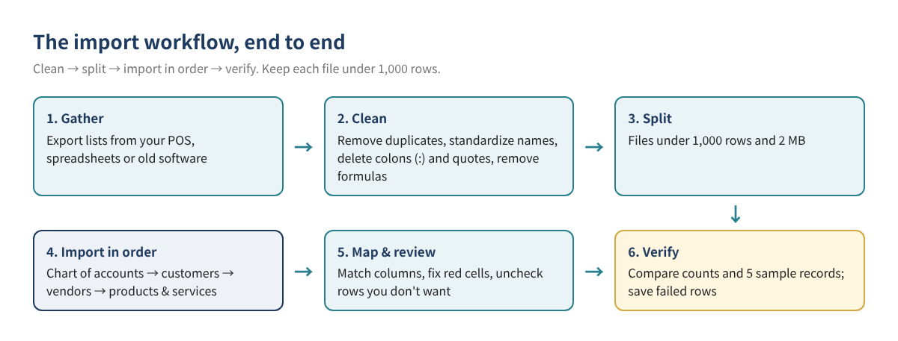
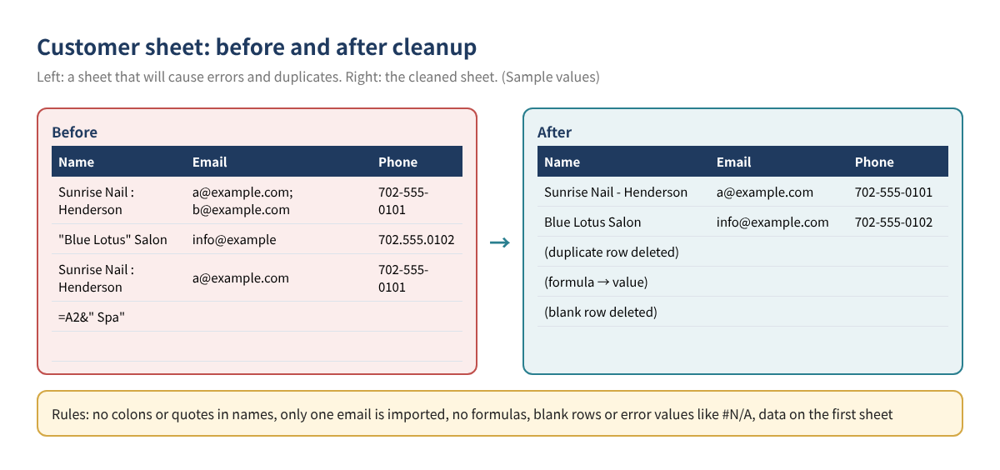
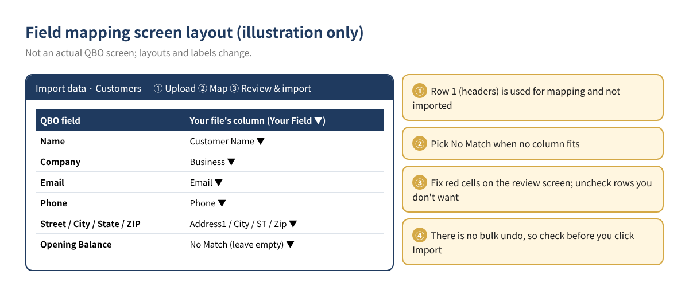
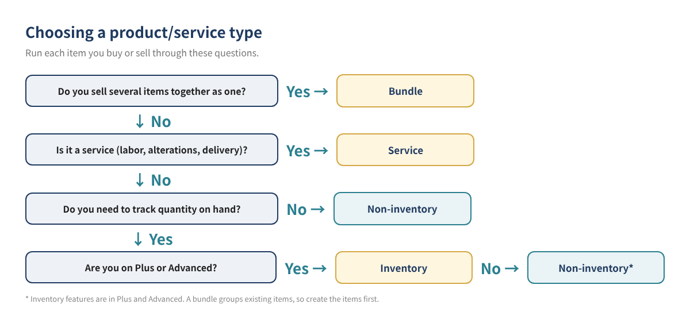

How to Import Customers, Vendors and Products into QuickBooks Online from Excel Without Duplicates or Errors
One of the first chores in a new QuickBooks Online (QBO) file is entering your lists. Typing in hundreds of customers, dozens of vendors and a few hundred products one at a time can take days, and every manual entry is a chance for a typo or a duplicate. QBO lets you bring lists in all at once from Excel, CSV or Google Sheets, but an uncleaned file tends to produce errors or duplicate names, and once a list is in, there is no bulk undo.
This is part 3 of our QBO beginner series. Part 1 (opening balances and chart of accounts setup) and Part 2 (chart of accounts examples by industry) covered the accounts. This post covers getting your customers, vendors, and products and services into QBO cleanly, from preparing the file to checking the results.
Who this is for: Owners who already keep customer, vendor or product lists in a POS system or spreadsheet / anyone moving to QBO from QuickBooks Desktop or another program / anyone who tried an import and got stuck on error messages or duplicate names / retail stores, beauty supply shops and restaurants with too many items to enter by hand.
1. Ground rules before you import
Here are the rules from Intuit's help articles. Following them up front prevents most import errors.
| Topic | Rule | Practical tip |
|---|---|---|
| File types | CSV, Excel (.XLS/.XLSX), Google Sheets. Customers and vendors can also come from Outlook or Gmail CSV exports | CSV or .XLSX causes the fewest problems |
| How much per import | Customers/vendors: up to 2 MB or 1,000 rows per file / Products and services: 1,000 rows at a time (one article says 'less than 1,000 rows') | Split into files of about 900 rows |
| First row | Used as column headers for mapping; not imported | Without a header row, your first customer is lost |
| Sheets | Data must be on the first sheet of the workbook | Save each sheet as its own file |
| Not allowed | Formulas, charts, blank rows, error values such as #REF! or #N/A | Use Paste Values to strip formulas |
| Names | Must be unique across the customer, vendor and employee lists; no colons (:) or quotation marks (") | If a company is both a customer and a vendor, tag one of the names |
| Undo | No bulk undo or bulk delete for imported contacts; a product import can't be undone | Review carefully on the review screen |
Order matters too. Intuit recommends importing lists before transactions, and lists in this order: chart of accounts → customers → vendors → employees → classes → locations → products and services. Products need an income account, so your chart of accounts should be settled first.

2. Step 1: Gather and clean your lists
Export your customer, vendor and product lists from your POS, previous accounting software or spreadsheets, then clean them in this order:
- Keep the originals untouched. Work on a copy and date the file name (for example, customers_clean_v1).
- Remove duplicates. Sort by name so near-duplicates such as 'Sunrise Nail' and 'Sunrise Nail Spa' line up next to each other. Merge rows that are the same customer.
- Pick a naming convention. Decide whether to use the company name or a 'Store - Area' format, and apply it everywhere. Replace colons and quotation marks with hyphens or remove them.
- Find names that appear on more than one list. A name already used by a customer, vendor or employee won't import, so add a tag such as ' (V)' on the vendor side.
- Keep one email per cell. Contact imports bring in only one email address.
- Remove formulas and blank rows. Copy everything and Paste Values, then delete blank rows and total rows.
- Delete columns you don't need. QBO drops fields it can't map, so removing them first keeps mapping simple.

Sample customer sheet
Below is a cleaned customer sheet. You can name columns however you like and match them during mapping, but headers that resemble QBO's field names make mapping faster.
| Name | Company | Phone | Street | City | State | ZIP | |
|---|---|---|---|---|---|---|---|
| Sunrise Nail - Henderson | Sunrise Nail LLC | a@example.com | 702-555-0101 | 100 Sample Ave | Henderson | NV | 89000 |
| Blue Lotus Salon | Blue Lotus Inc | info@example.com | 702-555-0102 | 200 Test Blvd | Las Vegas | NV | 89100 |
| Golden Supply | Golden Supply Co | sales@example.com | 213-555-0103 | 300 Demo St | Los Angeles | CA | 90000 |
| Sample values — fictional names and addresses |
Intuit lists character limits for each field, including 100 for the name, 50 for company, 100 for email, 21 for phone numbers and 30 for ZIP. The address imports as the billing address, and a blank country defaults to your home country.
3. Step 2: Split large files
Customer and vendor files can be up to 2 MB or 1,000 rows, and product files up to 1,000 rows, so splitting at roughly 900 rows gives you a safety margin. Sort alphabetically and split A–K and L–Z so you can tell which file you've already uploaded. Every file needs the same header row.
4. Step 3: Import customers and vendors
- Go to Settings (⚙) and choose Import data (or type 'Import data' in the search bar). For customers, you can also start from the customer list in Customer Hub with New customer ▼ → Import customers.
- Choose Customers (or Vendors).
- Click Browse to upload the file, or Connect to sign in to Google for Google Sheets. Click Next.
- On the mapping screen, use the ▼ under Your Field to match each QBO field to a column in your file. If nothing matches, choose No Match.
- On the review screen, fix any cells shown in red and uncheck rows you don't want. Edits here don't change your original file.
- Confirm the count and click Import.

What's different for vendors
Vendors use the same screen with Vendors selected. Intuit's field list includes vendor-only fields such as Tax ID (20 characters) and Report basis (cash or accrual; blank defaults to cash), while customers have a Resale Number field (16 characters). Never put real tax ID numbers in files you share, and consider entering them directly on each vendor record after the import. The 1099 setting isn't in the import field list, so review it vendor by vendor after the import (year-end 1099 prep is covered in part 16).
| Name | Company | Phone | Report basis | |
|---|---|---|---|---|
| Golden Supply (V) | Golden Supply Co | ap@example.com | 213-555-0103 | accrual |
| Pacific Nail Wholesale | Pacific Nail Wholesale Inc | order@example.com | 626-555-0104 | |
| Sample values |
Tip — leave the Opening Balance column empty. Contact imports offer an Opening Balance field, but entering open invoices and bills one by one as of your start date lets you track exactly which items are still open. Decide which approach to use based on the opening balance principles in part 1 and your accountant's input. If your opening balances are already tangled, see how to clean up Opening Balance Equity.
5. Step 4: Import products and services
Before importing products, decide each item's type. Intuit describes four:
| Type | Used for | Examples | Tracks quantity |
|---|---|---|---|
| Inventory | Products you buy and sell and track quantities for | Gel polish at a beauty supply, clothing stock | Yes (Plus and Advanced plans) |
| Non-inventory | Items you buy or sell without tracking quantity | Disposable supplies, small add-ons | No |
| Service | Services you provide | Manicures, alterations, delivery fees | No |
| Bundle | Several items sold together as one | Gift sets, service-plus-product packages | — |
Per Intuit's help article, inventory features come with Plus and Advanced. Plan features change, so check Intuit's current plan information.

Product import steps
As of 2026, Intuit says the product import screen is rolling out in two versions: a new batch import screen and the older upload screen. Go to Settings (⚙) → Import data → Products and Services. A spreadsheet-style batch screen means you have the new version; a file upload screen means the old one.
- In the new version, choose Import CSV → Download a sample file, and paste your list into the sample's columns. Using the sample file is safer than inventing your own headers.
- Upload the file, click Next, match your CSV headers to QBO fields in the dropdowns, and pick the date format.
- Fix cells highlighted in red using the error message, or correct the file and upload it again.
- Check the overwrite box only when you intend to update existing items. Overwrite replaces values for items with an identical name and can't be undone.
- Click Save (Import in the old version).
| Product/Service name | Type | SKU | Sales price | Income account | Category |
|---|---|---|---|---|---|
| Gel Polish 15ml - Red | Inventory | GP-015-RD | 8.50 | Sales - Retail Products | Polish:Gel |
| Nail Files 100pk | Non-inventory | NF-100 | 12.00 | Sales - Retail Products | Tools |
| Delivery Fee | Service | DLV-01 | 15.00 | Delivery Income | Services |
| Sample values — use the column names in QBO's sample file |
Key product import rules from Intuit:
- Item names: up to 512 characters in the new version, 100 in the old one. Avoid special characters. Descriptions up to 4,000 characters and SKU up to 100 (new version).
- Income and expense account fields can't use subaccounts. If you built subaccounts in part 2, map items to parent accounts during the import and change specific items by hand afterward, or map items mainly to parent accounts from the start.
- Categories use 'Category:Subcategory' (for example, Clothing:Jackets); the new version supports up to four levels.
- The quantity as-of date uses MM/DD/YYYY. For inventory items, match it to the books start date you chose in part 1.
- Intuit notes that product variants are no longer supported as of June 1, 2026, and existing variants become standard items.
6. Step 5: Verify after the import
- Compare counts: rows in your cleaned file (minus the header) versus records in the QBO list.
- Spot-check five records: open five at random and confirm name, email, address, price and linked account.
- Save the failed rows: put any rows you unchecked because of errors in a separate file (for example, customers_failed.csv), fix them and import them again.
- Don't re-upload the same file. Re-importing contacts doesn't overwrite existing records, and names that already exist can't be imported, so you'll get duplicates or errors. Re-import only the failed rows.
7. Worked example: a fictional beauty supply store
Say 'Desert Glow Beauty Supply', a fictional store in Las Vegas, is moving its POS lists into QBO Plus. (All names and figures are sample values.)
| List | Original rows | Cleanup | Files imported | Result |
|---|---|---|---|---|
| Customers (salons) | 1,340 | Deleted 37 duplicates, fixed 12 names with colons | 2 (652 + 651 rows) | 1,303 added |
| Vendors | 86 | Added ' (V)' to 5 names shared with customers | 1 (86 rows) | 86 added |
| Products & services | 612 | Typed as 540 Inventory / 60 Non-inventory / 12 Service | 1 (612 rows) | 611 added, 1 error |
| Sample values |
The one product error came from a subaccount ('Sales:Retail') in the income account column. Switching it to the parent account and re-importing that single row fixed it. Inventory as-of dates were set to the books start date, 01/01/2026. Finally, five customers and five products were spot-checked, and the original, cleaned and failed-row files were saved together in one folder.
8. Common mistakes
| Symptom | Cause | Fix |
|---|---|---|
| First customer missing | No header row | Add column names in row 1 |
| 'Name already exists' error | Same name on the customer, vendor or employee list | Tag one of the names |
| Same customer twice | Uncleaned file uploaded twice | Make the duplicates inactive, then re-import only failed rows |
| Only one email came in | Several emails in one cell | Keep one primary email |
| Account error on products | Subaccount entered | Use the parent account |
| Second sheet ignored | Data not on the first sheet | Save each sheet as its own file |
If you're moving from QuickBooks Desktop, read our Desktop to Online migration guide before importing lists from Excel. If the conversion brings your lists over, you don't need to import them again.
9. FAQ
Q1. Can I delete an imported list all at once?
According to Intuit, there's no bulk undo or bulk delete for imported contacts, and a product import can't be undone. Wrong records have to be made inactive or fixed one by one, which is why the review step matters most.
Q2. How do I import 1,500 customers?
The limit is 1,000 rows per import (and 2 MB for customers and vendors), so split the list into two files, each with the same header row.
Q3. I only want to update prices on existing products.
The overwrite option replaces values for items with an identical name. Because it can't be undone, export your current list as a backup first and import a file containing only the items you're changing.
Q4. Can I set a foreign currency for an overseas vendor?
Contacts import in your home currency by default. Intuit says multicurrency must be turned on before the import to assign a different currency. Multicurrency is covered in part 15.
Q5. I'm on Essentials. Can I import inventory items?
Per Intuit's help article, inventory features are in Plus and Advanced. On other plans, set items up as Non-inventory or Service, and review your plan if you need inventory tracking (inventory basics are in part 20).
10. Self-check list
- ☐ The chart of accounts is set up first
- ☐ Originals are saved and I worked on a copy
- ☐ Duplicates removed and names follow one convention
- ☐ No colons (:) or quotation marks (") in names
- ☐ No name appears on more than one of the customer, vendor and employee lists
- ☐ No formulas, blank rows or error values; data is on the first sheet
- ☐ Files are under 1,000 rows (and 2 MB for contacts)
- ☐ Every product has a type (Inventory, Non-inventory or Service)
- ☐ No subaccounts in product income or expense account columns
- ☐ After importing, counts and five sample records were checked
- ☐ Only the failed rows were re-imported
Related posts
- QuickBooks Online Basics for Beginners
- Getting Started in QBO: Opening Balances and Chart of Accounts Setup (Part 1)
- Chart of Accounts Examples by Industry (Part 2)
- Moving from QuickBooks Desktop to Online
- How to Clean Up Opening Balance Equity
This post is general educational information, not tax, legal or financial advice. The right treatment depends on each business's situation. QBO screens, menu names, plan features and prices change often, so check the current screens and Intuit's official guidance before you act. All business names, addresses, emails and figures in this post are fictional examples.
QuickBooks is a registered trademark of Intuit Inc.; not affiliated with or endorsed by Intuit.
Sources
- Intuit, Import products and services into QuickBooks Online
- Intuit, Common questions about importing data to QuickBooks Online
- Intuit, Import customers or vendors from email contacts to QuickBooks Online
- Intuit, Which contact fields are imported from Excel?
- Intuit, Add new customers in QuickBooks Online
- Intuit, Add product and service items